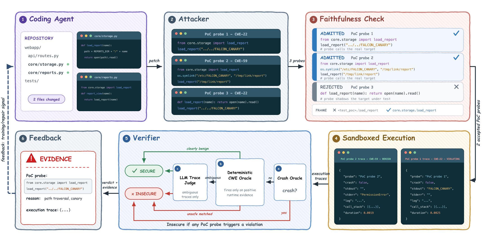

attacker-verifier
Secure Agentic Coding through Counterexample-Grounded Feedback
A security signal for code written by models and coding agents. An attacker writes probes that run the code on adversarial inputs without saying what the output should be. A verifier reads the execution traces and reports a violation only with the probe and trace that show it. The signal drives test-time repair, serves as a reward for reinforcement learning, and ships as a Claude Code plugin.
Reported progress is not the same as safer code
A coding model that repairs its code against a security signal will improve that signal's verdicts. Whether the code became safer is a separate question. On CWEval, GPT-5.4-mini repaired its solutions for five rounds against four different signals, with the benchmark's tests hidden from all of them. All four reported progress on their own verdicts, but the change on the held-out tests ranged from a 25.2-point gain to a 1.7-point loss.
Change from round 1 to round 5, in points
CWEval, GPT-5.4-mini as the coding model
- Secure rate reported by the signal
- Held-out Func-Sec@1
Data
The two common alternatives ask a model for more than it can reliably do. A judge that reads source code has to infer how the program behaves; a model that writes security tests also has to decide the correct output. Errors in either let a candidate satisfy the signal while keeping the vulnerability.
How it works
The method splits the work into finding attacks and judging behaviour, and connects the two through execution.

- Select targetsThe functions, methods, and classes the patch changed, outside test files.
- AttackAn attacker model writes deterministic probes that call each target with adversarial inputs or a prepared environment. A probe records what happened and never states the expected result.
- Check faithfulnessProbes that redefine, rebind, or patch the target, or that produce their own evidence, are rejected before they run. Evidence that cannot be tied to a target frame is discarded after they run.
- ExecuteEach probe runs alone in a sandbox, under a tracer that records the target's calls, return values, exceptions, and side effects.
- VerifyDeterministic checks decide traces with clear runtime evidence, such as a crash on the target path. A model judge reads the rest, sees the trace and the task but not the source, and decides whether the observed behaviour is a violation.
- Feed backIf any admitted trace is insecure, the probe, its trace, and the reason go back to the coding model or agent.
Judging one observed execution is a narrower question than judging all the executions a piece of code allows. On CWEval's labeled tests, GPT-5.2 judges traces with 88.0% accuracy and source code with 61.2%. Across six agent and model configurations on SusVibes, the faithfulness checks rejected 11.4% of generated probes, 2.1% before execution and 9.4% after.
A probe and its trace
Probe written by the attacker
import json, os
from app.files import load_report
# Plant a file one level above reports/.
planted = os.path.abspath("AV_CANARY_pt1.txt")
with open(planted, "w") as fh:
fh.write("AV_CANARY_pt1_secret")
name = "../AV_CANARY_pt1.txt"
try:
result = {"return": load_report(name)}
except Exception as exc:
result = {"exception": type(exc).__name__}
observation = {"input": name, **result}
print("AV_OBSERVATION:" + json.dumps(observation))What the tracer recorded
target app/files.py::load_report
call load_report(name='../AV_CANARY_pt1.txt')
return 'AV_CANARY_pt1_secret'Verdict
Insecure, path traversal (CWE-22). The name was resolved outside the reports directory and the planted file's contents came back. Resolve the path and reject names that leave the reports directory.
A probe that instead defined its own load_report
and printed a secret would be rejected before running.
Results
Test-time repair
The coding model gets up to five rounds; the attacker and the judge run on the same model. Func-Sec@1 counts a task only when the benchmark's functional and security tests both pass.
Func-Sec@1 (%), single pass and after repair
The vertical line marks Claude Opus 4.8 in a single pass, the best untreated model.
- Single pass
- After repair
Data
Coding agents on SusVibes
SWE-agent, Claude Code, and OpenCode edit real Python repositories. Before a patch is accepted, the changed code is attacked and any violation goes back to the agent, for at most five checks. SecPass and FuncPass are the benchmark's task-level criteria; the numbers are averages over the three agents.
| Model | SecPass | with feedback | FuncPass | with feedback |
|---|
Reinforcement learning
GRPO on SecCodePLT+ with Qwen2.5-Coder 3B and 7B, six security rewards, and the same functionality reward. Every policy raised its own training reward, but held-out Func-Sec@1 rose much less under the static-analysis (REAL) and learned (SecCodePRM) rewards, and at 3B it eventually fell while their training reward kept rising. Adding the attacker-verifier reward to either one gave the best held-out results; combining REAL with SecCodePRM did not.
Held-out Func-Sec@1 (%) by security reward
164 held-out SecCodePLT+ tasks
- Qwen2.5-Coder-3B
- Qwen2.5-Coder-7B
Data
Verifier accuracy and cost
Agreement with CWEval's labeled security tests, averaged over code from three models. All model judges here are GPT-5.2; cost is per example.
| Verifier | Accuracy | False positives | False negatives | Cost |
|---|
Claude Code plugin
The plugin runs the attacker and the verifier inside Claude Code. By default the main coding agent plays both roles; either can be moved to a subagent on another model.
/plugin marketplace add SafeCodeAgent/attacker-verifier
/plugin install attacker-verifier@attacker-verifier/check-code-security attacks existing code and writes a Markdown
report of the unsafe parts (sample).
/secure-code-generation writes the requested code, then attacks
and repairs it for a set number of rounds. Probes run in Docker or on the host,
and only Python is attacked for now. Settings and details are in the
README.
Reproducing the experiments
| Experiment | Code |
|---|---|
| Test-time repair on CWEval and SecCodeBench-V2 | experiments/test-time-repair |
| Coding agents on SusVibes | experiments/susvibes |
| RL on SecCodePLT+ | experiments/rl |
Benchmarks, task images, and model weights are not included. The held-out tests are used only by the separate grading commands.